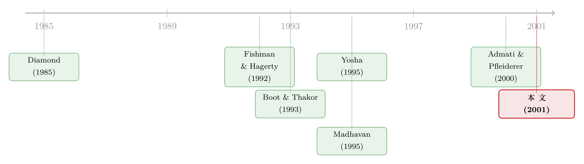

披露的三张面孔：为什么「说得越多」，反而有人更想去打探？
本文读的是 Boot & Thakor (2001, Review of Financial Studies)：他们把企业自愿披露的信息拆成三种「面孔」，证明在均衡里所有公司都会把三类信息全盘披露；而真正反直觉的一点是——与既有文献「披露会挤掉私人信息生产」的结论相反，互补型信息的披露反而强化了投资者私下打探的动力，只有替代型信息才会削弱它。
1 一个 CEO 的犹豫
假设你是一家公司的 CEO，手里攥着三条还没对外说的消息。
第一条，是一笔重大的研发（R&D）投入计划；第二条，是和你最大客户续签了一份关键合同；第三条，是一份年终盈利预测，而它所依据的数据，其实早在季度沟通会上就一点点喂给分析师了。
问题来了：这三条消息，你都该披露吗？
直觉上，你会觉得这三个决定不该一样——因为这三条消息「长得不一样」。但要把这种直觉讲清楚，没那么容易。难点在于：信息不只是你这个内部人在生产，市场上也有一些投资者在自己花钱打探你公司的底细。于是你披露的任何东西，除了直接影响股价之外，还会间接地改变这些投资者「要不要继续打探」的算盘。而这种间接影响有多大、朝哪个方向走，恰恰取决于你披露的是哪一种信息。
这就是 Boot & Thakor (2001) 想形式化回答的问题：一家公司应该披露什么样的信息、披露多少？ 听上去像个老问题，但他们切入的角度很不一样——以往文献几乎一边倒地告诉我们「披露是好事」，而他们要追问的是：当披露会挤掉知情投资者的信息优势、从而削弱他们打探的动力时，这个「好事」还成立吗？
（关于「主动把信息说出口」这件事本身的张力，可以先看一眼《把坏消息主动说出口：当公司价值在随机游走，沉默反而更贵》，那是从另一个角度问「沉默到底贵不贵」。）
2 披露的三张面孔
要回答上面那个问题，第一步是把「信息」这个含糊的词拆开。Boot 和 Thakor 把企业能披露的信息分成三类，正好对应开头那三条消息。
第一种，叫待加工的互补信息（to-be-processed complementary information）。 这种信息披露出来，但不加工就没用。比如公司公布了未来几年按产品线划分的 R&D 预算——所有投资者都看得到这条原始信息，可它对未来现金流意味着什么，必须有人投入资源去「处理」才能读懂。那些花了成本、具备处理能力的投资者，我们称为「知情者」。关键在于：这种披露不会削弱知情者已有信息的价值，反而是给他们的加工能力提供了更多原料。
第二种，叫预加工的互补信息（preprocessed complementary information）。 这是和任何投资者能自行获取的信息正交的信息，所有人不用费力加工就能消化。比如「那份大客户合同确实续签了」——这条消息一出，所有投资者都能据此把对现金流的预期往上修一档。它补全的是全体投资者的信息。
第三种，也是最关键的对照组，叫替代信息（substitute information）。 这种信息一旦披露，等于把知情者本来就会知道的东西，免费告诉了所有人。开头那份年终盈利预测就属于此类——它直接抹平了知情者相对于不知情者的信息优势。
抓住这条主线：前两种是「互补」，意味着披露不蚕食知情者的私有信息；第三种是「替代」，意味着披露直接拿走了知情者的饭碗。本文几乎所有反直觉的结论，都从这个「互补 vs 替代」的二分里长出来。
3 模型：一个五日的小世界
接着，我们需要一个能把这三种信息装进去的舞台。Boot-Thakor 搭了一个五期（\(t=0,1,2,3,4\)）、所有人风险中性、无贴现的小世界。
公司与类型。 一家公司在 \(t=0\) 进入资本市场发行证券，卖掉自己全部现金流的索取权。公司有两种类型：好（G）与坏（B）。好公司在 \(t=4\) 的价值 \(\tilde{x}\) 等于 \(x-a\) 或 \(x+a\)，各以 0.5 的概率出现；坏公司价值 \(\tilde{y}\) 等于 \(y-a\) 或 \(y+a\)，同样各半；其中 \(0
注意一个细节：公司被设定为卖掉全部现金流的索取权，这就堵死了「好公司靠少卖一点股份来发信号」这条路——否则份额本身就成了可信信号，模型会变成另一个故事。
三类投资者。 市场上有三种人: - 流动性/噪声投资者：总需求 \(\ell\) 随机，服从密度 \(f(\ell)\)，支撑在 \((0,\infty)\)，且 \(f'(\ell)<0\)、\(\log f(\ell)\) 凹（对数凹）。 - 不知情的相机抉择投资者（uninformed discretionary investors, UDIs）：他们事先不知道公司类型，但会观察到前两类人的总需求，并据此定价、吸收净交易。他们扮演的是「市场出清者（market maker）」的角色，定价让自己期望利润为零。 - 知情投资者：UDI 可以花成本 \(M_i\in\mathcal{M}\) 把自己变成知情者，成本在投资者之间横截面上各不相同。
信号与需求。 花了 \(M_i\) 之后，投资者收到一个有噪声的信号 \(\theta\):
$$\Pr(\theta=G\mid G)=\Pr(\theta=B\mid B)=u\in(0.5,1),\qquad \Pr(\theta=G\mid B)=\Pr(\theta=B\mid G)=1-u.$$
\(u\) 越接近 1，信号越准。知情者看到 \(\theta=G\) 就买、看到 \(\theta=B\) 就不买:
$$d_I=d_I(\theta)=\begin{cases}1 & \text{if } \theta=G\\ 0 & \text{if } \theta=B.\end{cases}$$
令 \(\mu\) 为变成知情者的投资者测度，则知情者的总美元需求为 \(D_I=\mu\, d_I(\theta)\)。市场出清价格是
$$P^e=E(\tilde{z}\mid\tau),$$
其中 \(\tau=1-[D/P]\) 是 UDI 的需求，\(D=D_I+\ell\) 是知情者与流动性投资者的合计需求。
4 核心方程：打探到底值不值
现在到了真正关键的一步：一个投资者愿不愿意花 \(M_i\) 去打探，取决于「知情」能带来的期望净收益。这就是全文的中枢方程。当知情者看到 \(\theta=G\) 时他才下单（\(D=\mu+\ell\)），于是边际投资者的期望净收益 \(V_i\) 为:
这里用到一个小化简：\(0.5(x-a)+0.5(x+a)=x\)，所以好公司的条件期望价值就是 \(x\)，坏公司就是 \(y\)。\(a\)（公司内部的现金流波动）在期望意义上被洗掉了——它影响的是别处的风险，而不是这一层的均值博弈。
均衡的知情者测度 \(\mu^*\) 由「边际投资者净收益为零」这个条件钉死:
$$V\big(\mu^*\mid q,\phi,x,y,a,M(\mu^*),f(\ell)\big)=0,$$
其中 \(\phi\) 表示披露的信息，\(M(\mu^*)\) 是边际知情者的打探成本。比边际投资者成本更低的人（\(M_i 读懂这个方程，就读懂了全文：披露 \(\phi\) 通过改变价格函数 \(P^e(\cdot)\) 进而改变 \(V_i\)，从而移动均衡的知情者人数 \(\mu^*\)。披露好不好，最终落到「它把 \(\mu^*\) 往上推还是往下拽」。 有了中枢方程，我们就能把那个反直觉的结论说清楚了。 披露对交易的影响里，藏着两股相互抵消的力量。一方面，披露越多，价格里直接含进的信息越多（其他条件不变），这对好公司是好事；另一方面，披露可能削弱信息获取的收益，导致知情者变少、价格透明度下降、好公司的期望市值反而走低。本文的全部张力，就在这两股力之间。 那么，三种信息分别把天平压向哪一边？ 待加工的互补信息：它给知情者的「加工」提供了新原料，让处理信息这件事变得更值钱。于是更多人愿意付 \(M_i\) 去打探，\(\mu^*\) 上升，价格透明度提高——好公司的市值因此被抬高。披露在这里不是挤出，而是吸入。 预加工的互补信息：它提高了所有人信息的精度，同样不蚕食知情者的优势，私人信息生产的激励也被强化。 替代信息：它把知情者本来就知道的东西公开了，知情者的信息优势被直接抹平，打探的边际收益下降，\(\mu^*\) 收缩——这才是传统文献里那个「挤出效应」真正适用的场景。 把这三块拼起来，本文的主要结论是: 最后这一条尤其值得玩味：人们常担心「交易所互相竞争会引发监管竞次（race to the bottom）」，而本文的逻辑恰恰相反——竞争把披露标准往上抬。 本文还有一条容易被忽略、却是它区别于其他披露文献的暗线：金融创新（financial innovation）。 Boot-Thakor 沿用他们自己 1993 年「证券设计（security design）」的思路，把金融创新理解为一种改变交易激励的设计——通过改变投资者从「付费获取信息」中得到的边际回报，来调节市场上的打探行为。换句话说，证券设计和信息披露干的是同一件事的两面：都在拨动「知情的边际收益」这根弦。这正是把「交易激励效应」和「证券设计效应」串在一起的纽带。 于是结论顺理成章：替代信息披露既然削弱了打探激励，也就削弱了「靠设计新证券来提升透明度」的金融创新动力；而互补信息披露对此的影响则模棱两可——它一边强化打探、一边又可能让某些证券设计变得多余。 （信息生产与证券设计如何纠缠，另一篇值得对照的是《发股票，不是「稀释」，而是请人来替你查账》。） 把这条线索捋一捋，本文的位置就清楚了。 最早的源头是 Diamond (1985)。他指出，公司披露会削弱私人信息生产的收益——而由于这种生产在他的模型里是不协调投资者之间的重复劳动、没有内在社会价值，所以「披露是好的」。这是「挤出效应」的理论原点。接着，Fishman & Hagerty (1992) 从内幕交易与股价效率的角度，进一步坐实了「披露 + 挤出」的故事：内幕交易会打消外部投资者付费打探的念头，所以披露内幕信息能让市场参与者受益。  然后，文献分出两支。一支讲溢出效应（spillover）：Bhattacharya & Chiesa (1995) 与 Yosha (1995) 证明，向投资者披露也会把信息泄露给竞争对手，所以披露应被限制在没有竞争敏感性的信息上——这一支的结论是「披露可能有害」。另一支讲交易所之间的微观结构差异：Madhavan (1995) 建模交易披露，说明没有强制交易披露就无法消除市场分割；后续 Naik-Neuberger-Viswanathan、Huddart-Hughes 等延续了「跨市场披露要求如何影响订单流与流动性」的追问。 真正关键的一步，是 Boot & Thakor 自己 1993 年的「证券设计」框架，它把「披露」和「金融创新」接上了线。而 Admati & Pfleiderer (2000) 几乎同期地从「强制披露与外部性」角度逼近同一片地带。 于是反转出现在 2001 年：本文不再把披露当成铁板一块的「好」或「坏」，而是先把信息拆成互补 / 替代三类，再证明——既有文献念念不忘的「挤出」只对替代信息成立，互补信息的披露反而吸入了更多打探者。这是它对 Diamond (1985) 那条主线最锋利的一处修正。 Q：「互补」和「替代」到底差在哪一个机制上？ 差在披露有没有动到知情者的私有信息。互补信息（无论待加工还是预加工）不蚕食知情者已有的优势，甚至给「加工」提供新原料，于是打探的边际收益上升、\(\mu^*\) 上升；替代信息直接把知情者会知道的东西公开，抹平其优势，\(\mu^*\) 下降。一句话：互补=加原料，替代=抢饭碗。 Q：为什么坏公司也愿意把三类信息全披露？这不是自曝其短吗？ 因为在这个均衡里坏公司总是模仿好公司。如果坏公司不披露，沉默本身就成了「我是坏公司」的信号，市场会据此把价格打到坏类型的水平；既然怎么都瞒不住，不如跟着好公司一起披露，至少保住「池子里有 \(q\) 的概率是好公司」这点模糊性。这是个混同（pooling）逻辑，不是坏公司真的想坦白。 Q：这和 Diamond (1985) 的「披露挤出信息生产」是直接矛盾吗？ 不是全盘推翻，而是划定边界。Diamond 的挤出在本文里依然成立——但只对替代信息成立。本文的贡献是指出，对互补信息，符号是反的。所以两者不是对错之争，而是「Diamond 讲的是三种面孔里的哪一种」。 Q：模型里令现金流波动 \(a\) 在均值博弈里被洗掉了，那它还有用吗？ \(a\) 不进入「好公司期望值 \(x\) vs 坏公司期望值 \(y\)」这一层的均值定价，但它刻画了类型内部的现金流不确定性，是模型设定里区分「均值信息」与「细分状态信息」的伏笔。本文的信号 \(\theta\) 针对的是总量（均值）类型，所以 \(a\) 在主结论里退居幕后。 Q：「交易所竞争推高披露要求」这个结论稳健吗？会不会只是这个模型的特例？ 这是个理论命题而非实证发现，依赖于「披露能吸入打探者、从而抬高好公司市值」这条互补信息逻辑。一旦现实中替代信息占主导，竞争的方向就可能反转为竞次。所以它更应被读作「在互补信息的世界里，竞争向上」，而不是一个无条件的普适规律。 Q：这个框架对今天的「实时披露 / 高频信息」有什么提醒？ 它提醒我们：判断一条披露好不好，不能只看「市场上信息变多了」，而要先问「它是给打探者加原料还是抢饭碗」。同一份盈利预测，如果只是把分析师已知的东西公开（替代），会浇灭打探；如果是给加工者提供新的待处理原料（互补），反而会点燃打探。（关于披露与价格信息含量的张力，可对照《披露越「漂亮」，价格越「糊涂」？》。） 1. 把「三张面孔」搬到公司债市场。 【经济故事】本文是股权 / IPO 的世界，但公司债市场里「知情者打探」的色彩更浓——评级机构、做市商、专业债券基金都在花成本加工发行人信息。一条披露（比如新增的 ESG 数据、按产品线的现金流细分）究竟是「互补」还是「替代」，会决定债券二级市场的流动性与买卖价差往哪走。
【可行性】中。可用 TRACE 成交数据 + 发行人披露事件（8-K、自愿披露的运营指标），以披露类型为处理变量做事件研究，识别难点在于把披露干净地分类成互补 / 替代，可能需要文本方法辅助。 2. 外资持有人是「互补」还是「替代」型信息生产者？ 【经济故事】外资机构常被视为带来全球信息的「加工者」。如果一国强化披露后外资打探更勤（\(\mu^*\) 上升），说明披露对他们是互补；若外资因披露而减少调研、转为被动持有，则是替代。这恰好能为「外资究竟改善还是损害本地价格透明度」的争论提供机制证据。
【可行性】中。可借「可投资度（investability）」放开作为准自然实验，结合外资持仓与本地价格信息含量（price nonsynchronicity）测度。识别上要小心外资进入与披露改革常常同时发生。 3. 交易所竞争是否真把披露标准往上抬？ 【经济故事】本文预言交易所竞争提高披露严格度。跨境双重上市、SPAC 上市地选择、近年交易所间的上市规则博弈，都提供了检验场景。
【可行性】中偏低。需要跨交易所、跨年度的披露规则强度面板，构造一个可量化的「披露严格度」指标本身就很难，且竞争强度内生。可先做描述性证据。 4. 把替代 / 互补的二分用到「监管强制披露」的福利评估上。 【经济故事】本文说强制披露大体多余，仅在代理 / 时间一致性问题下才有用。若能在数据里区分被强制披露的信息究竟偏互补还是偏替代，就能预测哪类强制披露会真正改善流动性、哪类反而挤出私人信息生产。
【可行性】中。Reg FD、MiFID II 等披露监管变更可作冲击，结合分析师覆盖（私人信息生产的代理变量）与流动性指标。识别相对干净，难在信息分类。 贡献：本文最锋利的地方，是把「信息披露」这个被前人当成同质变量的东西，沿着「是否动了知情者私有信息」这条线一刀切成三块，从而把 Diamond (1985) 的挤出结论从「普适规律」降格为「替代信息的特例」。把披露与证券设计 / 金融创新接上线，也是少有人走的一步。结论「所有公司全盘披露」「竞争推高披露标准」都干净利落。 对识别的担忧：这是一篇纯理论文章，结论的强度高度依赖几个设定——公司卖掉全部现金流索取权（堵死了份额信号）、信号 \(\theta\) 只针对均值类型、UDI 定价零利润且无法卖空。一旦允许部分发行、允许信号针对细分状态、或放松零利润假设，「坏公司总模仿好公司」这个支撑全文的混同均衡是否还稳，需要打个问号。 后续想看到的：最想看到的是把三张面孔做成可测量的实证分类——哪怕只是用文本方法把企业披露粗分为「待加工 / 预加工 / 替代」，再去看它们对打探强度（分析师覆盖、机构调研、二级市场价格信息含量）的差异化影响。如果实证能复现「互补吸入、替代挤出」这个符号反转，这篇 2001 年的理论才算真正落了地。5 反转：互补型披露，竟然让更多人去打探
6 把披露和「证券设计」接上线
7 文献脉络
评论与延伸（Q&A + 研究方向）
(a) 几个可能的疑问
(b) 几个可能的研究问题与提案
我的判断
参考文献